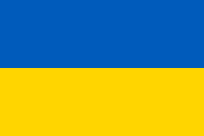
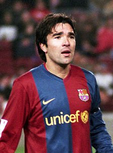
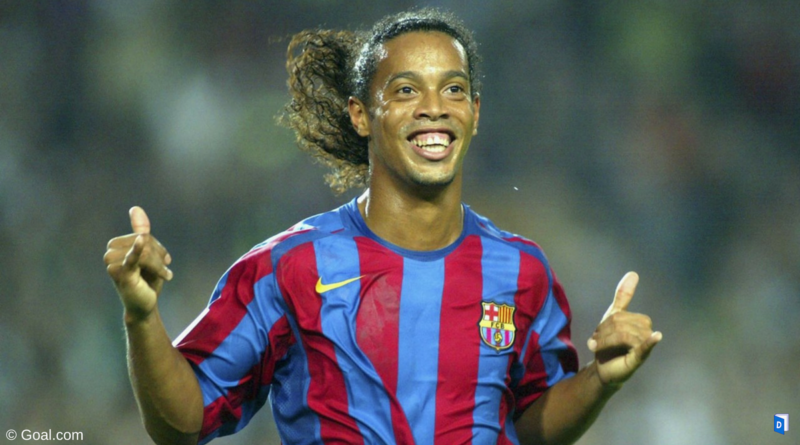

 Andriy CHEVTCHENKO - 2004
- Le Blokhine des temps modernes
En 2005,
Ronaldinho
, le génie brésilien du FC Barcelone, est largement élu Ballon d'Or France Football.
Nationalité : Ukrainienne
Né le 29 septembre 1976, à Yahotine (UKR)
Taille : 1,83
Poids : 73 kg
Poste : attaquant
Clubs : Dynamo Kiev (1986-1999) et Milan AC (depuis 1999)
Palmarès : Supercoupe d'Europe 2003 ; Ligue des champions 2003 ; Championnat d'Ukraine 1995, 1996, 1997, 1998 et 1999 ; Championnat d'Italie 2004 ; Coupe d'Ukraine 1996, 1998 et 1999 ; Coupe d'Italie 2003 ; Supercoupe d'Italie 2004 ; meilleur buteur du Championnat d'Ukraine 1999 (18 buts) ; meilleur buteur du Championnat d'Italie 2000 (24) et 2004 (24)
Bilan en club : 653 matchs, 326 buts
Bilan en équipe d'Ukraine : 58 sélections A, 26 buts (1995-2005)
Bilan en phase finale de Coupe du monde : néant
Palmarès Ballon d'Or : vainqueur en 2004 (3e en 1999 et 2000)
Classement du Ballon d’Or France Football 2004 :
Andriy Chevtchenko (Ukraine / Milan AC)

Deco (Portugal / FC Barcelone)

Ronaldinho (Brésil / FC Barcelone)
Retour à l'accueil